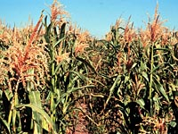
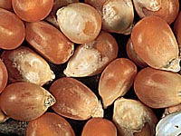

Indian corn or maize is classified as Zea mays,
with the probable area of origin being Mesoamerica.
This grain is the world's third most important grain for human consumption.
Corn plants vary in height from 60 to 700 cm (that's 2 to 22 feet!)
and support an 'ear' weighing 450 g (1 pound). Corn is regarded as a warm season
crop. It has adapted
to live in regions ranging from the semiarid to wet environments; and
grows in warmer parts of Canada, in the United States, throughout Mexico
and Central America, central Argentina and Chile, Africa, Central Europe
and Asia. Corn has the most variety (seven classifications) of all the grain crops.
We are most familiar with three of these; flour, pop and sweet.

Outside of Canada it is one of the most important (coarse)
cereals, specifically as an animal feed. Unlike other cereals, corn will not germinate until the temperature approaches 12 °C and it stops growing after 36 °C (compared to wheat's
1 °C to 40 °C). This means that corn has a smaller growing
range than the cold season cereals. The smaller growing range and
a greater number of days to maturity (110 to 130) put corn at a distinct disadvantage for growth in Saskatchewan. The two traits mean
that most areas of our province (usually) do not have enough growing days within corn's growing range for it to mature before the first fall frost. In addition, corn requires fairly high precipitation at regular intervals during the growing season. All of these factors have so far limited the growth of present maize varieties to areas of the province's southeast, and only if early seeding is possible.
|